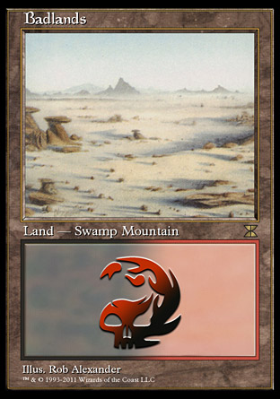
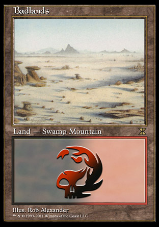

about
An idea I've had floating in my mind for a website that helps you build a land base for
Commander decks. Usually the constraints
are finances & colour identity. It also helps to know your win conditions (eg. agro
vs control), which can decide whether you play a Maze of Ith
or Gavony Township.
{kind=link}
{kind=link}
To start with, I will build on the mana base I'm sculpting for my newest Commander,
Nekusar, the Mindrazer. Eventually it'd
be nice if you could just pick colours, budget, and a general strategy.
Every Colour lands
Best in 5 Colour decks, useless in Mono Colour decks


Dual lands
Pricy, because they're the best and there's a very limited supply.
 


Shock lands
The closest we'll get to a Dual lands reprint. They're called Shock lands because if you
want them to behave like a Dual land when they enter the battlefield, it'll do 2 damage to you.


Fetch lands
For 1 life, they'll go and get whatever you need. Combined with the previous cards, you
can search for almost any two colours. And sometimes all you need is a good shuffle effect.
Likely to get a reprint.


Filter lands
They only make colourless land alone, but when you put one colour in and get a combination you
need they're fantastic.


Pain lands
They'll ping you for one damage if you need a colour, but they don't enter the battlefield tapped.


Check lands
They check to see if you already have a land type for the mana they produce, otherwise they enter tapped.
They're fantastic later in the game, as it becomes more and more likely you'll have the land you need for
these to enter uptapped.


Fast lands
They come in untapped if they're one of your first three lands. After that they get worse, but unless you
really needed them for turn 4-6 you should be ok. Sadly there are only allied colours at the moment.
I suspect these are due for a reprint to finish the cycle.


Scry lands
These enter the battlefield tapped but let you scry 1. I'm still play-testing them.
They're a strict upgrade over some basic lands, like Gates.


Karoo lands
They'll bounce a land, so use that mana first. But it does mean you can replay that land next turn, which
is good if you want landfall.


Refuge lands
Not really better than tap lands, but at least you get a little lifegain. Only in ally colours.


Vivid lands
They enter play tapped, but they provide early fixing when you need it.


Utility lands
We're getting off track here, but for the trade-off of only providing colourless mana these lands provide
other benefits


Bits & Pieces lands
We're getting off track here, but for the trade-off of only providing colourless mana these lands provide
other benefits